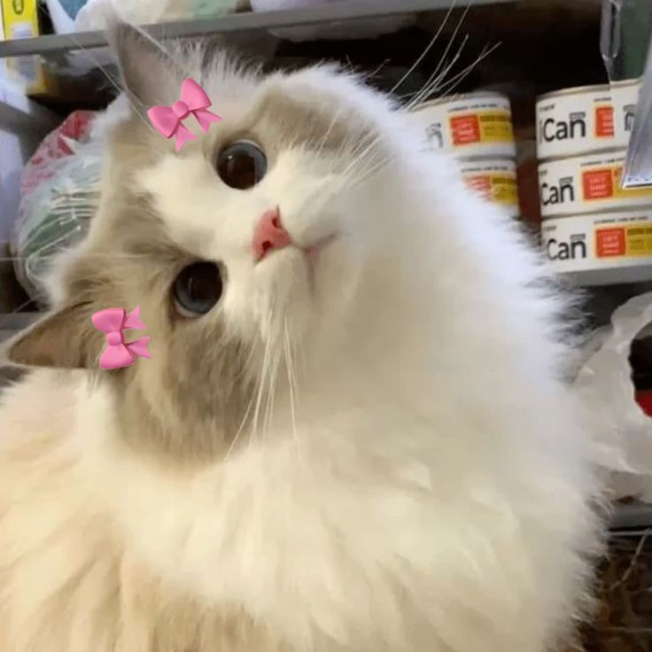
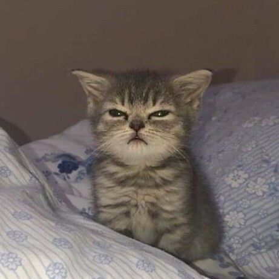
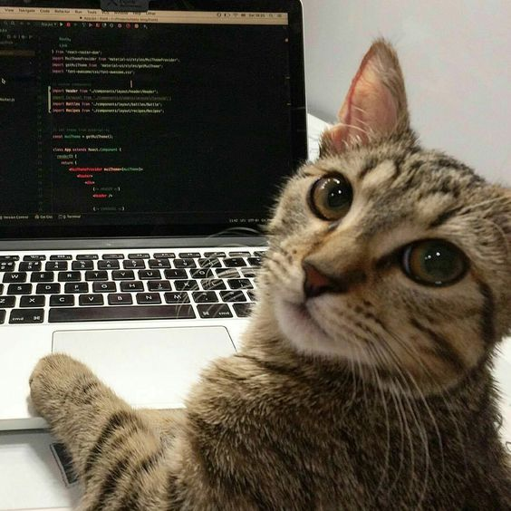
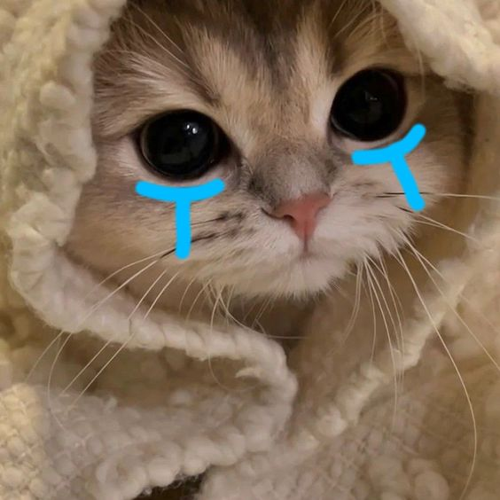
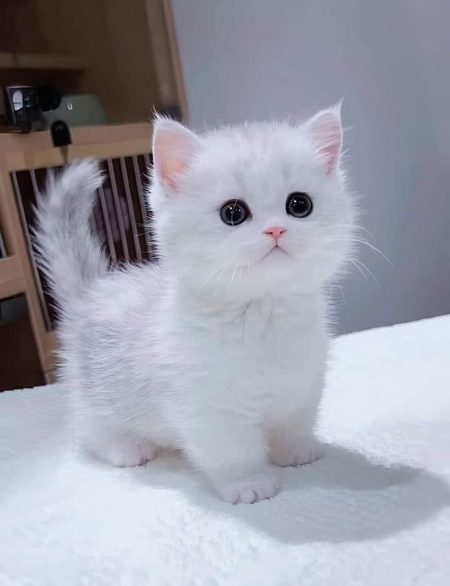
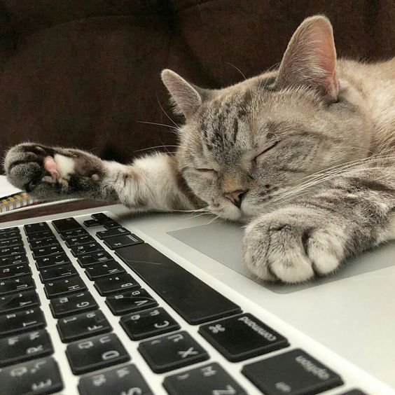

Это было самое начало пути. На этом этапе важно было проникнуться основами и настроиться на учёбу. И,
возможно, подумать, как новые знания могут повлиять на ваше будущее.
Первые дни на курсах стали для меня эмоциональным этапом, когда я с головой погрузилась в изучение основ и настроилась на учёбу. Я осознала, как новые знания могут открыть двери к моему будущему и помочь реализовать мечты.
1 спринт: Я — чистый лист
</HTML>

На первых этапах мы работали со страхами и сомнениями, которые часто испытывают новички. Один из них — страх
перед чистым листом. Это, конечно же, намного сложнее, чем боязнь куска бумаги. Часто за этим ощущением
скрываются более глубокие вопросы: с чего начать? а вдруг будет слишком сложно? что, если я не справлюсь?
И вот, наступил момент — я приступила к своему первому проекту "С чистого листа". У меня есть вся необходимая теория, и я наконец-то начала применять ее на практике. Это вдохновляет и радует!
1 спринт: А если не получится?
<CSS>

Первый проект — позади! Но это всё ещё самое начало пути. Радость могла быстро померкнуть и смениться
ожиданием провала. Или вы, наоборот, могли вдохновиться успехами и поверить в себя.
Сдав первый проект, я поняла, что иду в правильном направлении и не могу позволить себе опустить "лапки"!
2 спринт: Погоня за идеалом
<desigions>

На этом этапе вы уже достаточно разбирались в основах вёрстки, чтобы понять, как много ещё впереди. Вы могли
попытаться погнаться за идеалом и понять, что он недостижим. А, может, вы вовсе и не подвержены
перфекционизму и вместо того, чтобы сделать идеально, старались просто сделать.
Код работал.
2 спринт: О тех, кто рядом
care

Всё это время вы были не одиноки (хотя, возможно, иногда и чувствовали, что одни против целого мира). Вас
окружали одногруппники, команда сопровождения и просто близкие люди, которым можно пожаловаться, если
очередной макет просто так не поддавался. Осваивать что-то новое легче, когда рядом есть единомышленники, не
правда ли?
На курсе я встретила замечательных людей, которые всегда были готовы поддержать в трудные моменты. 🤗💖
3 спринт: Обходные стратегии
<support>

На этом курсе вы постоянно решали разные задачи. В какой-то момент вам могло показаться, что решения просто
иссякли. Значит, пришло время посмотреть на задачу под другим углом.
После каникул все делалось с высокой скоростью, ведь сейчас уже я была не на этапе чистого листаю
3 спринт: Когда опускаются руки
<lifes-style: none;>
Во время учёбы часто возникает чувство, когда не знаешь, за что хвататься. Вроде и проектную пора сдавать, и
задачи хочется порешать, и в теории получше разобраться, и жизнь не забыть пожить. В такие моменты очень
нужна концентрация. Вспомните, откуда вы её черпали.
Возникла усталось, а это значит, что был необходим перерыв.
«Сейчас я здесь»
<experience>

Сейчас вы уже очень много знаете о вёрстке. Но это только начало. Во-первых, впереди ещё много материала про
«красотищу». Во-вторых, с окончанием курса учёба не заканчивается. Вёрстка — это целый мир. И этот мир
постоянно меняется. Познать его полностью не получится, но это тот случай, когда важен сам процесс познания.
Ведь часто путь — и есть результат.
Сейчас можно только гордиться собой и отдохнуть на каникулах!